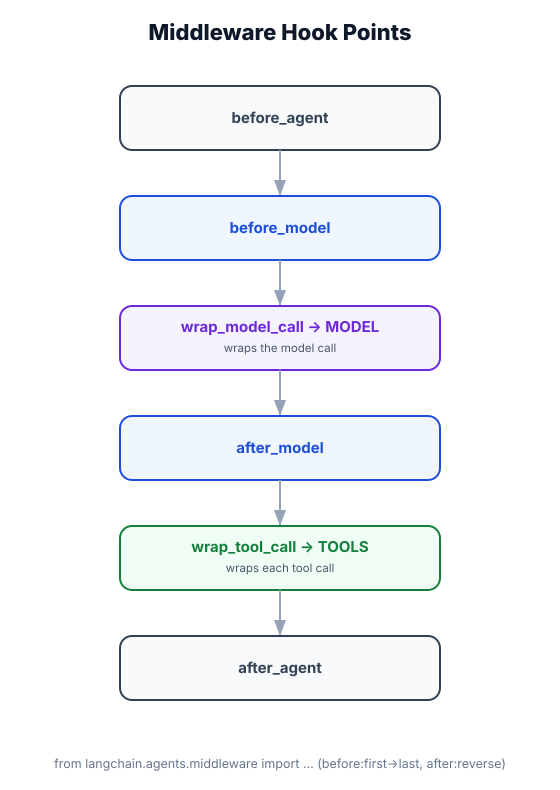

Middleware Overview
What you'll learn: What middleware is and why it exists, the five hook types and when they fire, how to write your first middleware class, and how to stack multiple middleware instances.

↗ Open full size · ⬇ Edit in Excalidraw — labels use real LangChain classes.
The agent loop is like flying: you (the message) go through several checkpoints before reaching the plane (the model). Middleware are the checkpoints — each one can inspect, modify, or stop you. @before_model is the gate check before boarding. @after_model is customs after landing. @wrap_model_call is the full journey from check-in to arrival. None of these know about the plane manufacturer — they just intercept at the right moment.
The Middleware Pipeline
Middleware wraps the agent's model calls and tool calls at specific hook points. Each hook sees the agent state and can read, modify, or interrupt it.
@wrap_model_call wraps the entire sequence above (before + model + after).
The Five Hook Decorators
system_prompt parameter.next().next() callable to execute the tool.Your First Middleware
from langchain.agents import create_agent
from langchain.chat_models import init_chat_model
from langchain.agents.middleware import AgentMiddleware
from langchain.agents.middleware import (
before_model, after_model, wrap_model_call, wrap_tool_call, dynamic_prompt
)
from langchain_core.messages import SystemMessage
import time
# ── Define a middleware class ──────────────────────────────────────────────────
class LoggingMiddleware(AgentMiddleware):
"""Logs every model call and tool execution with timing."""
@dynamic_prompt
def build_prompt(self, state, context) -> str:
"""Inject a system prompt dynamically based on state."""
# state has all agent state fields (messages, custom fields, etc.)
# context has runtime context (user_id, etc.)
user_name = context.get("user_name", "User")
return f"You are a helpful assistant. You are talking to {user_name}."
@before_model
def log_before(self, messages):
"""Log before the model is called."""
print(f"[MW] → Model call with {len(messages)} messages")
# Optionally modify messages (e.g., trim, filter):
return messages # pass through unchanged
# Return None or omit return to pass through unchanged
@after_model
def log_after(self, response):
"""Log after the model responds."""
content_preview = str(response.content)[:60]
print(f"[MW] ← Model response: {content_preview}...")
return response # pass through unchanged
@wrap_tool_call
async def time_tool(self, tool_name, tool_args, next):
"""Time every tool call."""
print(f"[MW] 🔧 Starting tool: {tool_name}({tool_args})")
start = time.perf_counter()
result = await next(tool_args) # execute the actual tool
elapsed = time.perf_counter() - start
print(f"[MW] ✅ Tool {tool_name} completed in {elapsed:.2f}s")
return result
# ── Use it ────────────────────────────────────────────────────────────────────
agent = create_agent(
model=init_chat_model("openai:gpt-4o-mini"),
tools=[],
middleware=[LoggingMiddleware()], # list of middleware instances
)
Stacking Multiple Middleware
Middleware runs in order — first listed runs outermost (first in, last out). Think of it as nesting: Middleware1 wraps Middleware2 wraps the model call.
from langchain.agents import create_agent
from langchain.chat_models import init_chat_model
from langchain.agents.middleware import (
AgentMiddleware,
SummarizationMiddleware, # prebuilt — covered in Module 14
HumanInTheLoopMiddleware, # prebuilt — covered in Module 14
)
from langchain.agents.middleware import before_model, wrap_tool_call
class AuditMiddleware(AgentMiddleware):
"""Logs all activity to an audit trail."""
@before_model
def audit_input(self, messages):
# Log to your audit system
print(f"[AUDIT] Model call: {len(messages)} messages")
return messages
@wrap_tool_call
async def audit_tool(self, tool_name, tool_args, next):
print(f"[AUDIT] Tool called: {tool_name}")
result = await next(tool_args)
print(f"[AUDIT] Tool result: {str(result)[:50]}")
return result
class RateLimitMiddleware(AgentMiddleware):
"""Simple per-minute rate limiter."""
def __init__(self, max_calls_per_minute: int = 60):
self.max_calls = max_calls_per_minute
self._calls = []
@before_model
def check_rate_limit(self, messages):
now = time.time()
# Remove calls older than 60 seconds
self._calls = [t for t in self._calls if now - t < 60]
if len(self._calls) >= self.max_calls:
raise RuntimeError(f"Rate limit exceeded: {self.max_calls} calls/min")
self._calls.append(now)
return messages
# Stack them — order matters!
# Execution order: AuditMiddleware → RateLimitMiddleware → SummarizationMiddleware → Model
agent = create_agent(
model=init_chat_model("openai:gpt-4o-mini"),
tools=[],
middleware=[
AuditMiddleware(), # outermost: runs first
RateLimitMiddleware(max_calls_per_minute=30),
SummarizationMiddleware(max_tokens=4000), # innermost: runs last before model
],
)
import time # for the rate limiter example aboveEach middleware hook fires on every pass through the ReAct loop — every model call, every tool call. If your middleware does something expensive (like a database lookup), consider caching the result using the agent state or a local dict. A @before_model hook that runs a slow operation will multiply that latency by the number of reasoning steps the agent takes.
Use tools for things the agent explicitly decides to do (search the web, send an email). Use middleware for cross-cutting concerns that happen automatically regardless of agent decisions: logging, rate limiting, prompt injection, message summarization, PII detection. Middleware is invisible to the model; tools are visible and the model can choose whether to call them.
Real-World Use Case
🏢 Enterprise Agent Deployment
A company deploys a customer service agent with four middleware layers: (1) AuditMiddleware logs every model call and tool invocation to a compliance log; (2) RateLimitMiddleware prevents a single user from exhausting API quotas; (3) PIIMiddleware detects and masks credit card numbers and SSNs in messages before they reach the model; (4) SummarizationMiddleware compresses old messages to stay within context limits. None of these concerns are visible to the agent — they "just work" for every request, regardless of which tools the agent calls.
Middleware = cross-cutting logic that wraps the agent loop. Five hooks: @dynamic_prompt, @before_model, @after_model, @wrap_model_call, @wrap_tool_call. Extend AgentMiddleware and decorate methods. Pass as a list to create_agent(middleware=[...]). First in the list = outermost. Module 14 covers the prebuilt middleware you get for free.